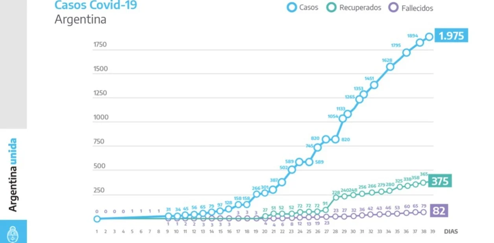

-


Bruno Tievoli tievolib@gmail.com - Dengue
- Corona
- Cambios climaticos
- ESI

El Coronavirus, la pandemia por la que todos estan preocupados y esta afectando a todo el mundo, y la OMS nombró como Pandemia. ¿Qué es realmente esta enfermedad?
La COVID-19 es una enfermedad infecciosa causada por un nuevo virus que no había sido detectado en humanos hasta la fecha. El virus causa una enfermedad respiratoria como la gripe (influenza) con diversos síntomas (barriostos, fiebre, etc.) que, en casos graves, puede producir una neumonía. Para protegerse puede lavarse las manos regularmente y evitar tocarse la cara.
El nuevo coronavirus se propaga principalmente por contacto directo (1 metro o 3 pies) con una persona infectada cuando tose o estornuda, o por contacto con sus gotículas respiratorias (saliva o secreciones nasales).
La primera muerte por COVID-19 en la Argentina se registró el sábado 7 de marzo. Era un hombre que había viajado a Francia y que hasta el día de su fallecimiento no se había detectado que tenía la enfermedad.
La pandemia del nuevo coronavirus ya superó los 2.000.000 de casos en el mundo y las cifras indican que la mayor cantidad de contagiados se encuentran en Estados Unidos, donde se se registraron cerca de 30 mil muertes. En Europa, España e Italia encabezan la lista. Llegaron a registrar alrededor de mil muertos en un día, aunque ahora, en ambos países, la curva epidemiológica comienza a descender.
En la Argentina , desde que se conoció el primer caso el 3 de marzo hasta el momento, se registraron 2.571 contagiados, 115 fallecidos y 596 personas que ya se recuperaron. Para evitar que se sature el sistema sanitario, el presidente Alberto Fernández extendió el aislamiento social, preventivo y obligatorio hasta el 26 de abril y evalúa cómo seguir en función de la evolución del brote en del país.
“Ya tenemos números. Alrededor del 4% de las personas que ingresaron al país han dado positivas. El trabajo que realiza de traslado seguro para que lleguen a su domicilio y puedan hacer el aislamiento social, preventivo y obligatorio ha sido muy importante para minimizar la transmisión”, sostuvo Vizzotti.